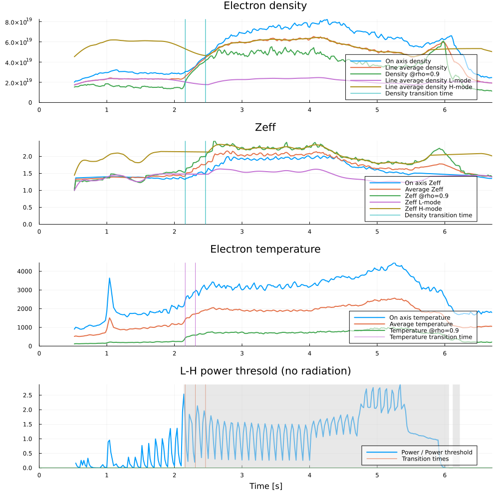
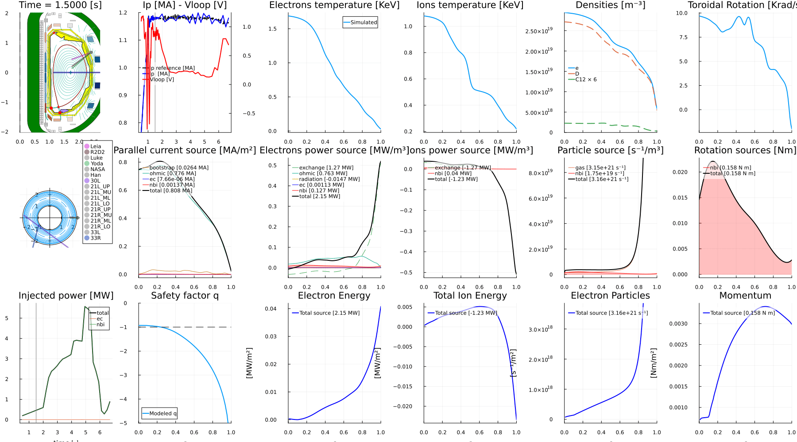
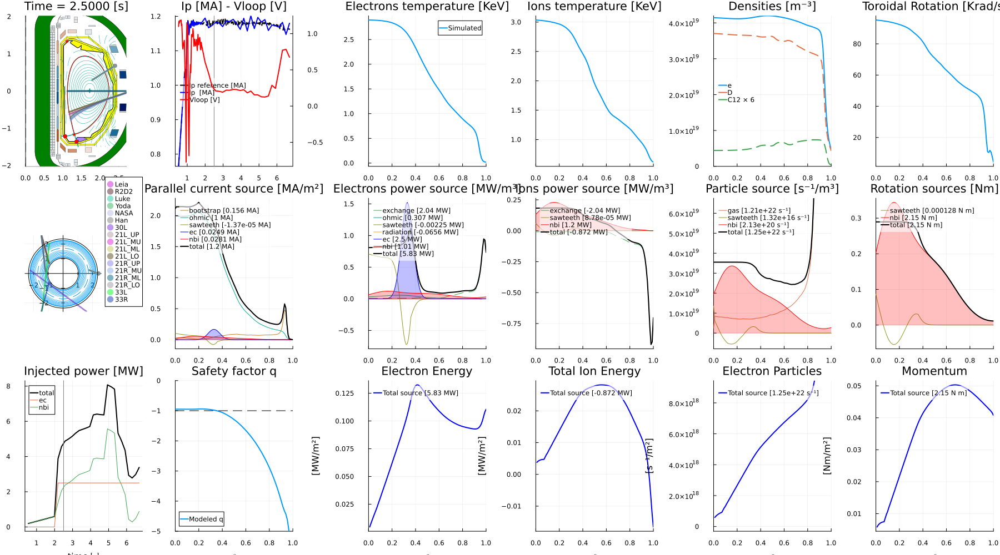

DIII-D Time-Dependent Simulation — FUSE Summer School
This tutorial walks through a complete time-dependent workflow in FUSE for a real DIII-D discharge (shot 200000). Starting from experimental data, we run three complementary cases:
- Replay: follow the experimental kinetic profiles to reproduce the shot and validate FUSE against the measurements.
- Simulation: let the physics models predict the profiles (dynamic pedestal + flux-matched transport).
- Modified simulation: a *"what if?" example with extra electron-cyclotron heating (ECH).
All three share the same configured starting point (:replay_init), so their differences isolate the effect of the modeling choices and the added heating.
What you'll learn
- Fetch experimental data for a DIII-D shot into
ini/act - Initialize
ddand checkpoint progress with@checkin/@checkout - Detect the L–H transition and extract pedestal parameters from experiment
- Run a time-dependent simulation with
ActorDynamicPlasmain replay and predictive modes - Apply synthetic diagnostics and animate the plasma evolution
- Explore a counterfactual with extra ECH
Prerequisites
- A working FUSE install — see the installation guide, or use the GA Omega server
- Access to the DIII-D data system — this notebook fetches shot 200000. If you don't have data access you can still read along: the outputs on this page are pre-rendered.
Companion page: DIII-D Time-Dependent workflows.
1. Load FUSE
We load FUSE together with Plots for figures and Interact for interactive widgets.
The first using FUSE triggers Julia's just-in-time compilation, so it takes a while, while every subsequent call is fast.
# Import needed packages
using Plots;
using FUSE
using Interact
FUSE.ProgressMeter.ijulia_behavior(:clear);<div style="padding: 1em; background-color: #f8d6da; border: 1px solid #f5c6cb; font-weight: bold;"> <p>The WebIO Jupyter extension was not detected. See the <a href="https://juliagizmos.github.io/WebIO.jl/latest/providers/ijulia/" target="_blank"> WebIO Jupyter integration documentation </a> for more information. </div>
2. Fetch the experiment
FUSE.case_parameters(:D3D, shot) pulls experimental data for a DIII-D shot from the MDS+ data system and returns the 0D initialization parameters (ini) and the actor controls (act). Here we use shot 200000.
We @checkin the result under the tag :fetch, so we can restore this exact starting point later without re-fetching.
use_local_cache=truereuses a previously cached fetch instead of hitting the server — handy when re-running the notebook.
# setup ini, act from MDS+ data
shot = 200000; @time ini, act = FUSE.case_parameters(:D3D, shot; use_local_cache=true)
# save ini, act in case we want to view later
@checkin :fetch ini act;[ Info: Connecting to mcclenaghanj@somega.gat.com
[ Info: Remote D3D data fetching for shot 200000
[ Info: Path on mcclenaghanj@somega.gat.com: /cscratch/mcclenaghanj/d3d_data/200000
[ Info: Path on Localhost: /var/folders/xw/fh54dglx5h3_mxz2y46jqv9h0000gq/T/mcclenaghanj_D3D_200000
[ Info: Loading files: D3D_machine.json ; D3D_200000_5000167971831672853.h5 ; nbi_ods_200000.h5
actors: FitProfiles
[ Info: Thomson subsystems scaled to match interferometer measurements: TS_core=1.047, TS_tangential=0.958
74.703604 seconds (371.96 M allocations: 22.948 GiB, 3.58% gc time, 19 lock conflicts, 231.39% compilation time: <1% of which was recompilation)3. Initialize the data structure
FUSE.init!(dd, ini, act) populates a fresh dd from the experimental data in ini: equilibrium, kinetic profiles, sources, and the actuator pulse schedules. This is our plausible starting state — not yet a self-consistent physics solution.
We checkpoint it as :init so every case below can start from the same point.
# Initialize dd
@checkout :fetch ini act
dd = IMAS.dd()
@time FUSE.init!(dd, ini, act);
# Checkin dd in case we want it for later
@checkin :init dd act;actors: CXbuild
actors: Sources
actors: SimpleEC
actors: SimpleNB
actors: NeutralFueling
58.298854 seconds (384.08 M allocations: 25.002 GiB, 3.87% gc time, 90.50% compilation time: <1% of which was recompilation)4. Analyze the L–H transition
Before evolving the plasma we characterize the pedestal dynamics from the experiment. FUSE.LH_analysis detects the L→H (and H→L) transition times and extracts the quantities the pedestal model needs:
tau_n,tau_t— density and temperature pedestal build-up timescalesW_ped_to_core_fraction— how the pedestal stored energy relates to the coremode_transitions— the times of confinement-mode changes
With do_plot=true, the detected transitions are overlaid on the experimental traces.
@checkout :init dd act;
experiment_LH = FUSE.LH_analysis(dd; do_plot=true);
5. Replay: reproduce the shot
In replay mode we follow the experiment: the transport and pedestal actors are set to :replay, so FUSE uses the measured kinetic profiles as boundary conditions while still evolving the current and equilibrium self-consistently. This reproduces the discharge and lets us validate FUSE against the measurements.
Configuration highlights:
- Time stepping — δt = 0.2 s from t = 1.8 s to the end of the equilibrium time base.
- What evolves — current, equilibrium, transport, sources, pedestal, and sawteeth.
- Transport & pedestal —
:replay(match experimental values); density and Zeff from experiment. - Equilibrium —
ActorEquilibrium → :FRESCOon a 129×129 grid, constrained by the magnetic diagnostics.
We checkpoint the configured starting state as :replay_init — the shared baseline that the predictive and modified cases below both branch from — then run ActorDynamicPlasma, apply the synthetic diagnostics (ActorMagnetics, ActorInterferometer), and checkpoint the result as :replay.
⏱️ This is one of the expensive cells — it runs a full time-dependent simulation.
# Start from our init dd
@checkout :init dd act;
# setup time
δt = 0.2
dd.global_time = 1.8#ini.time.simulation_start # start_time should be early in the shot, otherwise ohmic current will be wrong
final_time = ini.general.dd.equilibrium.time[end]
act.ActorDynamicPlasma.Nt = Int(ceil((final_time - dd.global_time) / δt))
act.ActorDynamicPlasma.Δt = final_time - dd.global_time
# choose what to evolve
act.ActorDynamicPlasma.evolve_current = true
act.ActorDynamicPlasma.evolve_equilibrium = true
act.ActorDynamicPlasma.evolve_transport = true
act.ActorDynamicPlasma.evolve_sources = true
act.ActorDynamicPlasma.evolve_pf_active = false
act.ActorDynamicPlasma.evolve_pedestal = true
act.ActorDynamicPlasma.evolve_sawteeth = true
# density and Zeff from experiment
act.ActorPedestal.density_ratio_L_over_H = 1.0
act.ActorPedestal.zeff_ratio_L_over_H = 1.0
act.ActorPedestal.mode_transitions = experiment_LH.mode_transitions
# equilibrium model setting
act.ActorEquilibrium.model = :FRESCO
act.ActorFRESCO.nR = act.ActorFRESCO.nZ = 129
# Particle fueling source rate
act.ActorNeutralFueling.τp_over_τe = 0.5
act.ActorPedestal.rotation_model = :replay # we don't have a good model for the rotation boundary condition
act.ActorSawteethSource.flat_factor = 1.0
act.ActorSawteethSource.period = 0.25 # turn off if no qmin<1 for 250 ms
# Set pedestal and transport to replay to match experimental values
act.ActorCoreTransport.model = :replay
act.ActorPedestal.model = :replay
act.ActorPFactive.boundary_weight = 1.0
act.ActorPFactive.magnetic_probe_weight = 1.0
act.ActorPFactive.flux_loop_weight = 1.0
act.ActorPFactive.strike_points_weight = 0.0
act.ActorPFactive.x_points_weight = 1.0
@checkin :replay_init dd act;
# run time-dependent simulation
@time actor = FUSE.ActorDynamicPlasma(dd, act; verbose=true);
# synthetic diagnostics
FUSE.ActorMagnetics(dd, act)
FUSE.ActorInterferometer(dd, act)
@checkin :replay dd act;
Progress: 100%|███████████████████████████| Time: 0:00:45 ( 0.17 s/it)
start time: 1.8
end time: 6.699999809265137
time: 6.699999809265137
stage: PFactive (2/2)
Ip [MA]: 1.180137619570065
Ti0 [keV]: 1.178052310398543
Te0 [keV]: 1.7932763995578052
ne0 [10²⁰ m⁻³]: 0.24647891062974975
max(zeff): 1.5543193173501326
ω0 [krad/s]: 21.585265207737137
55.691934 seconds (167.32 M allocations: 12.802 GiB, 1.64% gc time, 49.14% compilation time: <1% of which was recompilation)
actors: Magnetics
actors: Interferometer6. Animate the replay
We build an animation of the plasma overview as a GIF. plot_plasma_overview packs the equilibrium, profiles, and heating into a single multi-panel figure. (On this page the animation is shown as a single representative frame.)
# Time basis to step through (one frame per core_profiles time slice).
times = dd.core_profiles.time
@info "Animating $(length(times)) frames" t_start=first(times) t_end=last(times)
fps = 10
anim = @animate for time0 in times
FUSE.plot_plasma_overview(dd, Float64(time0); aggregate_hcd=true)
end
outfile = joinpath( "./plasma_overview.gif")
g = gif(anim, outfile; fps)
┌ Info: Animating 82 frames
│ t_start = 0.5199999809265137
└ t_end = 6.699999809265137
[ Info: Saved animation to /Users/mcclenaghan/Dropbox/programming/jupyter_notebooks/plasma_overview.gif
7. Predictive simulation
Now we let FUSE predict the profiles instead of replaying them. Starting again from :replay_init, we switch:
- Pedestal →
:dynamic, seeded with the L–H timescales (tau_n,tau_t,W_ped_to_core_fraction) from step 4. - Core transport →
:FluxMatcher, flux-matching Tₑ, Tᵢ, densities, and rotation withActorTGLFas a:TGLFNNneural-net surrogate.
Running ActorDynamicPlasma now advances the plasma using these predictive models, so the result is a genuine forward prediction rather than a replay of the measured profiles.
@checkout :replay_init dd act;
# Set pedestal model
act.ActorPedestal.model = :dynamic
act.ActorPedestal.tau_n = experiment_LH.tau_n # particle confinement time for LH dynamics
act.ActorPedestal.tau_t = experiment_LH.tau_t # particle confinement time for LH dynamics
act.ActorWPED.ped_to_core_fraction = experiment_LH.W_ped_to_core_fraction
act.ActorEPED.ped_factor = 0.8 # Average pedestal height relative to EPED
act.ActorPedestal.T_ratio_pedestal = 1.0 # Ti/Te in the pedestal
# Set core_transport
act.ActorCoreTransport.model = :FluxMatcher
act.ActorFluxMatcher.evolve_plasma_sources = true
act.ActorFluxMatcher.algorithm = :simple_dfsane
act.ActorFluxMatcher.max_iterations = -300 # negative to avoid print of warnings
act.ActorFluxMatcher.evolve_pedestal = false
act.ActorFluxMatcher.evolve_Te = :flux_match
act.ActorFluxMatcher.evolve_Ti = :flux_match
act.ActorFluxMatcher.evolve_densities = :flux_match
act.ActorFluxMatcher.evolve_rotation = :flux_match
act.ActorFluxMatcher.relax = 1.0
act.ActorTGLF.tglfnn_model = "sat0quench_em_d3d+mastu_azf+1"
act.ActorTGLF.model = :TGLFNN
@time actor = FUSE.ActorDynamicPlasma(dd, act; verbose=true);
# synthetic diagnostics
FUSE.ActorMagnetics(dd, act)
FUSE.ActorInterferometer(dd, act)
@checkin :predict dd act;Progress: 100%|███████████████████████████| Time: 0:01:08 ( 0.25 s/it)
start time: 1.8
end time: 6.699999809265137
time: 6.699999809265137
stage: PFactive (2/2)
Ip [MA]: 1.169753418712516
Ti0 [keV]: 2.8721388943358592
Te0 [keV]: 3.374922254240665
ne0 [10²⁰ m⁻³]: 0.2725052083379953
max(zeff): 1.394295077798294
ω0 [krad/s]: 37.00975617192601
70.360404 seconds (193.58 M allocations: 18.972 GiB, 2.08% gc time, 57.57% compilation time: <1% of which was recompilation)
actors: Magnetics
actors: Interferometer
ActorInterferometer(dd, par)8. Modified simulation with extra ECH
Finally, a "what if?". Starting once more from :replay_init, we modify the EC launcher pulse schedule: re-aim all five gyrotrons (via convert_DIII_D_to_IMAS_launch_angles, which maps DIII-D AZIANG/POLANG conventions to IMAS steering angles) and add 0.5 MW per beam after t = 2 s. Rerunning ActorDynamicPlasma shows how the extra electron-cyclotron heating changes the plasma.
# Rerun simulation again with extra EC
@checkout :replay_init dd act;
function convert_DIII_D_to_IMAS_launch_angles(AZIANG, POLANG)
phi_tor = deg2rad(AZIANG - 180.0)
theta_pol = deg2rad(POLANG - 90.0)
steering_angle_tor = -asin(cos(theta_pol) * sin(phi_tor))
steering_angle_pol = atan(tan(theta_pol), cos(phi_tor))
return steering_angle_tor, steering_angle_pol
end
for i in 1:5
# Change launch angles if desired.
alpha,beta = convert_DIII_D_to_IMAS_launch_angles(200.0, 120.)
dd.ec_launchers.beam[i].steering_angle_pol[:] .= beta
dd.ec_launchers.beam[i].steering_angle_tor[:] .= alpha
# Change heating to 0.5 MW per gyrotron and to turn on at 2s
time = dd.pulse_schedule.ec.time
dd.pulse_schedule.ec.beam[i].power_launched.reference[time.<2.0] .= 0.0
dd.pulse_schedule.ec.beam[i].power_launched.reference[time.>2.0] .= 0.5e6
end
# choose what to evolve
act.ActorDynamicPlasma.evolve_current = true
act.ActorDynamicPlasma.evolve_equilibrium = true
act.ActorDynamicPlasma.evolve_transport = true
act.ActorDynamicPlasma.evolve_sources = true
act.ActorDynamicPlasma.evolve_pf_active = false
act.ActorDynamicPlasma.evolve_pedestal = true
act.ActorDynamicPlasma.evolve_sawteeth = true
# run time-dependent simulation
@time actor = FUSE.ActorDynamicPlasma(dd, act; verbose=true);
# synthetic diagnostics
FUSE.ActorMagnetics(dd, act)
FUSE.ActorInterferometer(dd, act)
@checkin :predict_modify dd act;
Progress: 100%|███████████████████████████| Time: 0:00:33 ( 0.12 s/it)
start time: 1.8
end time: 6.699999809265137
time: 6.699999809265137
stage: PFactive (2/2)
Ip [MA]: 1.179880257191097
Ti0 [keV]: 1.178052310398543
Te0 [keV]: 1.7932763995578052
ne0 [10²⁰ m⁻³]: 0.24647891062974975
max(zeff): 1.5543193173501326
ω0 [krad/s]: 21.585265207737137
35.631565 seconds (43.09 M allocations: 6.755 GiB, 2.14% gc time)
actors: Magnetics
actors: Interferometer
ActorInterferometer(dd, par)9. Compare
We plot the plasma overview at t = 2.5 s, including the rotation profile. Compare it against the replay animation from step 6 to see the effect of the extra heating.
FUSE.plot_plasma_overview(dd, 2.5;aggregate_hcd=true, rotation_quantity=:sonic)
Next steps
- Swap the shot number to run your own DIII-D discharge
- Compare the replay, predictive, and modified runs using the
@checkoutcheckpoints (:replay,:replay_init) - Explore the individual physics/engineering models in the Actors documentation
- Learn the core data structures (
ini,act,dd) in the introductory tutorial
Acknowledgements
Work supported by US DOE under DE-FC02-04ER54698.